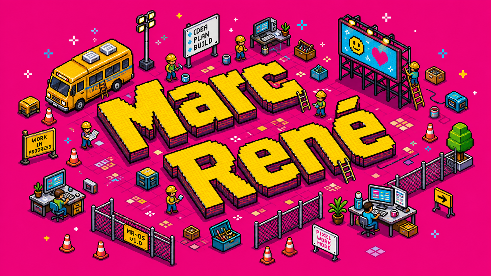

Loopbaan met richting
Mijn ervaring ligt op het snijvlak van consultancy, service delivery en continuïteit. Ik breng structuur zonder de praktijk uit het oog te verliezen.
8-bit corporate portfolio

Ik werk graag waar business, IT en uitvoering elkaar raken: helder krijgen wat nodig is, rust brengen in de aanpak en zorgen dat dienstverlening betrouwbaar blijft.
In het kort
Dit is mijn digitale thuisbasis: mijn CV, projecten, blog en muziek op één plek. Geen standaard profiel, maar een beeld van hoe ik denk, bouw en samenwerk.
Mijn ervaring ligt op het snijvlak van consultancy, service delivery en continuïteit. Ik breng structuur zonder de praktijk uit het oog te verliezen.
Opdrchtn.com, eyay.online en bousjans.paris laten zien hoe ik ideeën vertaal naar werkende digitale concepten.
Schrijven, muziek en persoonlijke interesses maken mijn profiel completer. Ze laten zien waar mijn aandacht naartoe gaat als ik niet in een project zit.
Carrière · CV
Ik help organisaties grip krijgen op processen, teams en kritieke dienstverlening. Mijn kracht zit in de combinatie van analyse, stakeholdergevoel en genoeg technische bagage om door te vragen.
Stuurt een team van 13 medewerkers aan rond functioneel beheer van bedrijfskritische applicaties voor 24/7 netoperatie. De nadruk ligt op operationele rust, duidelijke keuzes en vertegenwoordiging richting MT.
Vertaalt klantvragen naar concrete verbeteringen in IT-prestaties, processen en samenwerking. Afhankelijk van de situatie beweegt de rol tussen programma-, project- en deliverymanagement.
Analyseerde de bestaande architectuur, sprak met stakeholders en werkte een doelbeeld uit waarin organisatiecontext, processen, informatiestromen en systemen weer logisch met elkaar verbonden zijn.
Bouwde mee aan BCM-beleid en een werkbaar raamwerk. Ketenprocessen, herstelmechanismen en directieadvies kwamen samen in één verhaal over weerbaarheid, continuïteit en compliance.
Versterkte relatiemanagement, portfolio- en ketensturing en procesbesturing. Doel: IT-dienstverlening die betrouwbaar, veilig en aantoonbaar op orde is.
Hielp Defensie-teams landen in ServiceNow binnen GRITT. Ontwierp GAP-analysis dashboards, voerde CMDB-analyses uit en bracht meer scherpte aan in datagovernance.
Bewaakte prestaties, SLA's en KPI's over rijksdiensten heen. Stuurde leveranciers aan en verbeterde ITIL-processen rond incident, problem en change management.
Ontwikkelde een BCM-framework, crisis- en herstelstrategie en continuïteitsafspraken voor kritieke energiedata- en marktprocessen.
Stuurde een multidisciplinair team van 18 specialisten aan en bewaakte dienstverlening, continuïteit en kwaliteit tijdens de transitie van meer dan 800 applicaties.
De technische basis onder mijn werk: systeembeheer, infrastructuur, applicatiebeheer en IT-dienstverlening.
Onder meer ITIL V4 Specialist Create, Deliver and Support, ITIL V4 Foundation, Professional Scrum Master I, PRINCE2 Foundation, MCSE, MCSA, MTA en Microsoft EDA.
Aangevuld met BPMN Masterclass, ELK Stack Fundamentals, BMC TrueSight Operations Management en Cisco QSMB.
Ervaring opgedaan in uiteenlopende omgevingen, van publieke dienstverlening tot enterprise IT: KLM, DICTU, Groen Collect, Boost Foundation, Veolia, Yara, MBO Amersfoort, Zorginstituut Nederland, OGD en Microsoft.
Projecten
Ik bouw graag aan concepten die je kunt openen, testen en verder scherpen. Deze selectie laat zien waar mijn nieuwsgierigheid, ondernemerschap en praktische aanpak samenkomen.
Hobby's
Goed werk ontstaat niet alleen achter een laptop. Lezen, muziek, bewegen en cultuur geven mij nieuwe taal, energie en perspectief.
Boeken, essays en losse ideeën die later vaak terugkomen in gesprekken, plannen of blogstukken.
Playlists als momentopname: focus, stemming, onderweg zijn en tracks die precies op het juiste moment blijven hangen.
Open SpotifyNieuwe tools testen, kleine workflows bouwen en uitzoeken waar technologie het werk net menselijker of slimmer maakt.
Ruimte maken in mijn hoofd door te wandelen, sporten of simpelweg even ergens anders te kijken.
Ik let snel op details in producten: ritme, typografie, interacties en of iets logisch aanvoelt.
Nieuwe steden, goede koffie, musea en gesprekken die later onverwacht terugkomen in werk of ideeën.
marcsmusic
Muziek loopt al lang met me mee. Ik luister veel, ontdek graag nieuwe sounds en maak ook zelf muziek wanneer iets niet meteen in woorden past. Het helpt me focussen, voelen, creëren en weer even afstand nemen. Op deze pagina hoor je een kant van mij die je niet uit een CV of projectoverzicht haalt.
Contact
Stuur vooral iets concreets: een vraagstuk, opdracht, samenwerking of project waar je scherpte op zoekt. Ik reageer het liefst op gesprekken waar we snel tot de kern kunnen komen.
E-mail: marc@adviesnconsultancy.nl
Telefoon: +31 6 2267 5520
LinkedIn: linkedin.com/in/marcrene
Blog: marcren1.substack.com